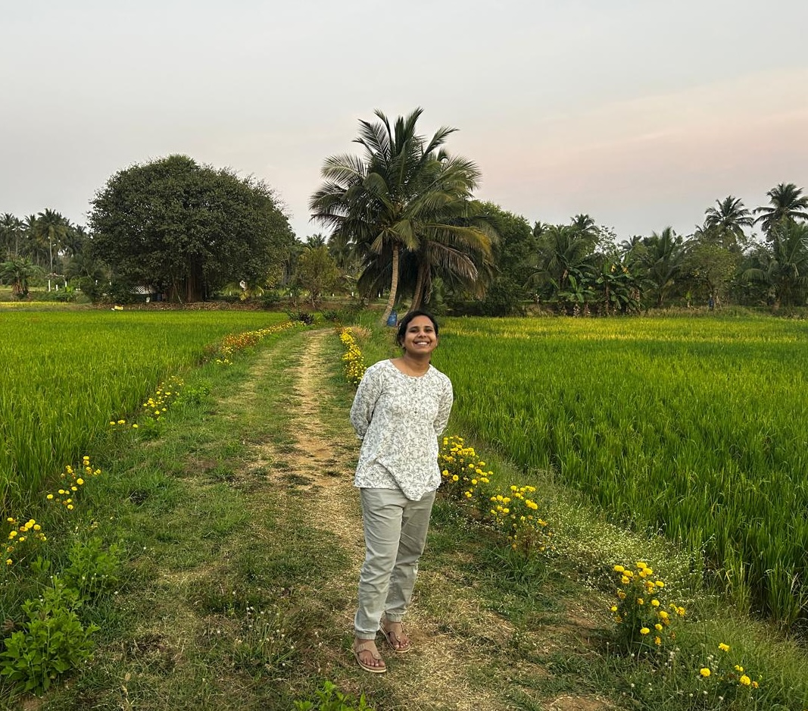

I’m an educator and content researcher who designs learning experiences at the intersection of curiosity, clarity, and creativity. I enjoy observing how people learn — where they pause, where they light up, and where confusion begins. I design resources that simplify complex ideas — especially in mathematics and critical thinking — and turn them into visual, intuitive experiences, using AI tools to structure ideas, prototype faster, and personalize learning.
Much of my work sits at the intersection of:
1. Mathematical thinking
2. Visual storytelling
3. Research-driven content design
4. AI-assisted learning systems
Away from the screen, I build and study miniature ecosystems. Observing moss, ferns, soil layers, and micro-patterns deepens my understanding of systems thinking — how small elements interact, self-balance, and evolve over time.
This ecological lens strongly influences how I design learning resources: interconnected, and alive.
My journey began as a Research Associate and later moved into design engineering and automation domains. A career break during motherhood gave me the space to reconnect with Nature and creativity — which helped me redefine myself as a learning designer and educator.
Today, I focus on building thoughtful learning spaces where mathematics, nature, design, and AI meet.